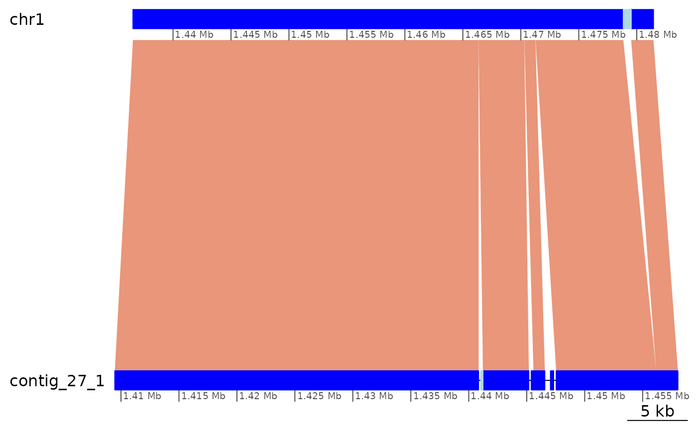
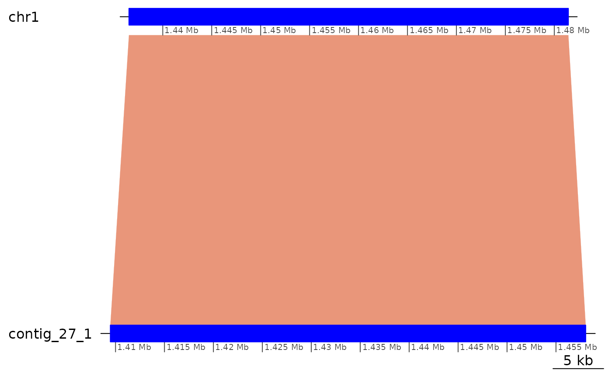
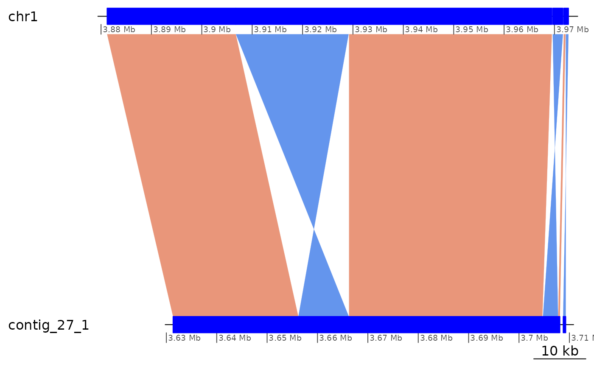
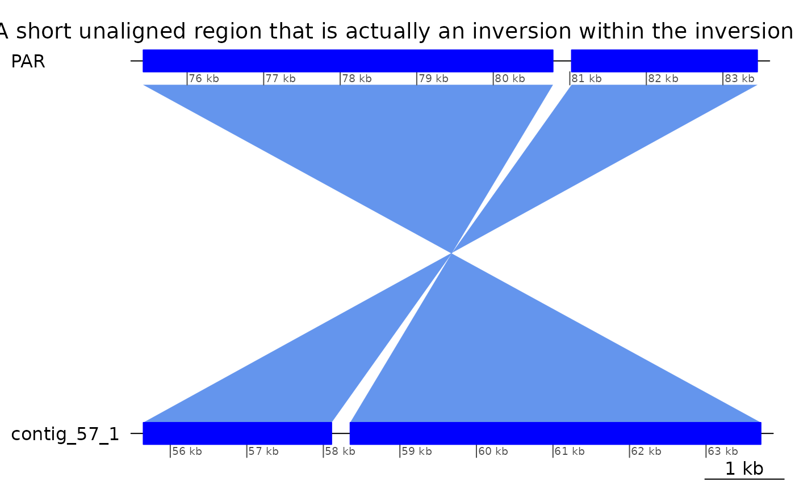
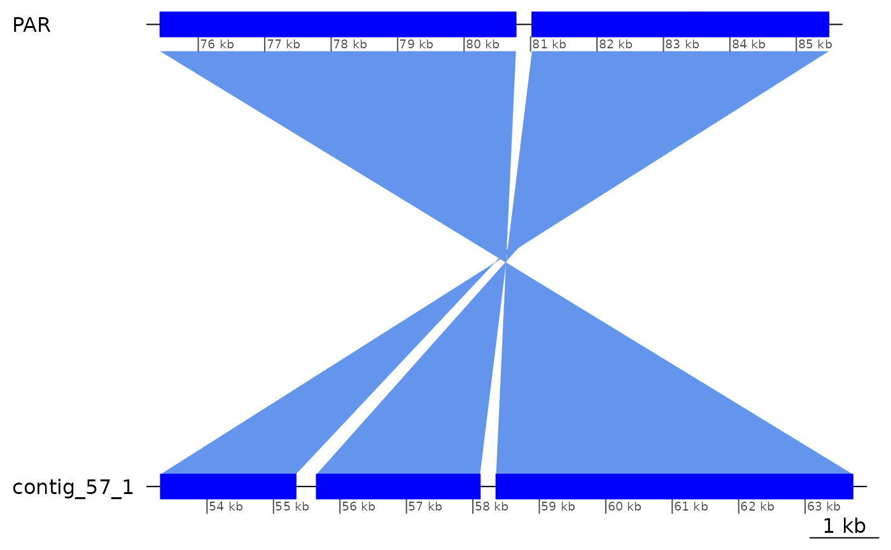

Regions interrupting colinearity
Charles Plessy
27 June, 2022
Source:vignettes/ColinearityInterruptors.Rmd
ColinearityInterruptors.RmdLoad pacakges and data
See the vignette("OikScrambling", package = "OikScrambling") for general details on package and data load.
See vignette("LoadGenomicBreaks", package = "OikScrambling") for how the different GBreaks objects are prepared.
suppressPackageStartupMessages({
library('GenomicBreaks')
library('ggplot2')
library("BreakpointsData")
})
genomes <- OikScrambling:::loadAllGenomes()
load("BreakPoints.Rdata")
reps <- OikScrambling:::loadAllRepeats()
transcripts <- OikScrambling:::loadAllTranscriptsGR()The problem:
The plot below shows high colinearity between Oki and Kum, which are from the same species. It also shows that the GenomicBreaks objects are still scattered in small pieces. What is interrupting colinearity?
plotApairOfChrs(coa$Oki_Kum, "chr1", main = "Oki – Kum")
In this vignette, we look at a couple of example regions in details. These regions helped me to decide how to process the data in Load Genomic Breaks (vignette("LoadGenomicBreaks", package = "OikScrambling") and to decide which analysis to prioritise elsewhere.
See vignette("RegionsOfInterest", package = "OikScrambling") for other regions of interest.
Aproximate assembly of Kume’s chromosome 1.
The best match for chr1 in the Kume assembly is contig_3_1. It maps roughly in the 8,000,000 – 13,000,000 region.
bestMatch <- function(gb)
tapply(width(gb$query), seqnames(gb$query), sum) |> sort() |> tail(1) |> names()
coa$Oki_Kum |> plyranges::filter(seqnames == "chr1") |> bestMatch()## [1] "contig_3_1"The next best match, contig_27_1 is most of chr1’s short arm.
## [1] "contig_27_1"
coa$Oki_Kum |> plotApairOfChrs(chrQ = "contig_27_1")The assembly is continued in details in vignette("ParallelPlots", package = "OikScrambling")
Alignments are real (Region of Interest 1)
When an alignment interrupts colinearity, is it trustable ?
Let’s check the second alignment pair, mapping 226 bases of contig_3_1 to the short arm.
ROI1 <- coa$Oki_Kum |>
plyranges::filter(seqnames(query) == "contig_3_1", end(query) <= 21079) |>
plyranges::arrange(start(query))
ROI1## GBreaks object with 3 ranges and 8 metadata columns:
## seqnames ranges strand | query score
## <Rle> <IRanges> <Rle> | <GRanges> <integer>
## [1] chr1 8086429-8100669 + | contig_3_1:714-16270 14241
## [2] chr1 3870099-3870324 - | contig_3_1:16561-16812 226
## [3] chr1 8100696-8104950 + | contig_3_1:16822-21079 4255
## Arm rep repOvlp transcripts flag
## <factor> <CharacterList> <integer> <Rle> <character>
## [1] long tandem 121 g2146.t1 <NA>
## [2] short rnd 85 <NA> <NA>
## [3] long rnd,tandem 114 g2151.t1;g2152.t1;g2.. Tra
## nonCoa
## <logical>
## [1] FALSE
## [2] TRUE
## [3] TRUE
## -------
## seqinfo: 19 sequences from OKI2018.I69 genome
coa$Oki_Kum |> plotApairOfChrs("chr1", "contig_3_1", xlim = gb2xlim(ROI1[-2]), main = "chr1 vs contig_3_1 at ROI 1")
coa$Oki_Kum |> plotApairOfChrs("chr1", "contig_3_1", xlim = list(c(3838658, 3881203), c(1, 21079)), main = "chr1 matching contig_3_1 in the short arm")
Is the alignment convincing ?
# Good match where reported
pairwiseAlignment(getSeq(genomes$Kum, GRanges("contig_3_1:16561-16812:-")), genomes$Oki$chr1[3870099:3870324], type="local")## Local PairwiseAlignmentsSingleSubject (1 of 1)
## pattern: [1] GGGGGCTGACCACTTTGACCAGTGTGTAATAT...GGGTTATTATATATCCTGAAGGGAGAAGGTCA
## subject: [1] GGGGGCTGACCACTTTGACCAGTGTGTAATAT...GGGTTATTATATATCCTGAAGGGAGAAGGTCA
## score: 344.5798
# 50 bp of flanking regions added to contrast
pairwiseAlignment(getSeq(genomes$Kum, GRanges("contig_3_1:16561-16812:-") + 50), genomes$Oki$chr1[(3870099 -50):(3870324 + 50)], type="global") |> writePairwiseAlignments()## ########################################
## # Program: Biostrings (version 2.62.0), a Bioconductor package
## # Rundate: Mon Jun 27 15:23:51 2022
## ########################################
## #=======================================
## #
## # Aligned_sequences: 2
## # 1: P1
## # 2: S1
## # Matrix: NA
## # Gap_penalty: 14.0
## # Extend_penalty: 4.0
## #
## # Length: 358
## # Identity: 279/358 (77.9%)
## # Similarity: NA/358 (NA%)
## # Gaps: 38/358 (10.6%)
## # Score: 9.03894
## #
## #
## #=======================================
##
## P1 1 GCAAAG---GTTACGAAAAATTTGCACACTCATCATTATGAGCCTTCATT 47
## || | ||| || | || | | || ||||| | |||| || ||
## S1 1 GCCCCGTTCGTTCCGCAGAAGTAAGAGAC-CATCACT-TGAG--TTGGTT 46
##
## P1 48 TTT-GGGGGCTGACCACTTTGACCAGTGTGTAATATGGGCAATGCTAAGC 96
## ||||||||||||||||||||||||||||||||||||||||||||||
## S1 47 CGAAGGGGGCTGACCACTTTGACCAGTGTGTAATATGGGCAATGCTAAGC 96
##
## P1 97 GCTAATCCTTTGAGATCCGATAAATACGCAATGGGCTCCCACGGTGCATC 146
## ||||||||||||||||||||||||||||||||||||||||| ||||||||
## S1 97 GCTAATCCTTTGAGATCCGATAAATACGCAATGGGCTCCCAAGGTGCATC 146
##
## P1 147 TT-CCGATAAAATTGACAAATGATAATTTCAGAAAAAATTCAGAATTATA 195
## || |||||||||||||||||||||||||| | |||||||||||||| |||
## S1 147 TTGCCGATAAAATTGACAAATGATAATTTTA-AAAAAATTCAGAATAATA 195
##
## P1 196 CTAAAAAAATAAGTATAACTATTGAAAGAAAGGGGTTATTATATATCCTG 245
## |||||||| |||||||||||||||||||||||||||||||||||||||||
## S1 196 CTAAAAAA-TAAGTATAACTATTGAAAGAAAGGGGTTATTATATATCCTG 244
##
## P1 246 AAGGGAGAAGGTCATTTATGAGAGAAGGTTAATTTATCACTGATAAATTA 295
## |||||||||||||| | || ||||||||| ||||||| |
## S1 245 AAGGGAGAAGGTCACTGAT-----------AATTTATCAGTGATAAAGCA 283
##
## P1 296 TCAGTGACCTTAT-TATAGAGGGCTTCTCCCTGGCCCGACTCGACTCGAC 344
## | | ||| || | | | | ||| | ||| ||| |
## S1 284 CC-GAAACCAGATATTTTTA-----TTTCCGTT-----ACTT---TCGTC 319
##
## P1 345 GCAACGCT 352
## ||| |
## S1 320 -CAATCCC 326
##
##
## #---------------------------------------
## #---------------------------------------
# No good match between the flanking pairs.
pairwiseAlignment(getSeq(genomes$Kum, GRanges("contig_3_1:16561-16812:+")), genomes$Oki$chr1[8086429:8104950], type="local")## Local PairwiseAlignmentsSingleSubject (1 of 1)
## pattern: [113] TTCTGAATTTTTTCTG
## subject: [11595] TTCTGGATTTTTTCTG
## score: 23.82705
pairwiseAlignment(getSeq(genomes$Kum, GRanges("contig_3_1:16561-16812:-")), genomes$Oki$chr1[8086429:8104950], type="local")## Local PairwiseAlignmentsSingleSubject (1 of 1)
## pattern: [221] AGGTTAATTTA
## subject: [1978] AGGTTAATTTA
## score: 21.79932Yes, the alignment looks real!
Colinearity interrupted by inversions and translocations (Region of Interest 2)
Let’s look at the area chr1:8080000-12900000 covered by contig_3_1. Can we coalesce it once we only keep the paired matches? The answer is no…
## GBreaks object with 303 ranges and 8 metadata columns:
## seqnames ranges strand | query
## <Rle> <IRanges> <Rle> | <GRanges>
## [1] chr1 8086429-8100669 + | contig_3_1:714-16270
## [2] chr1 8100696-8104950 + | contig_3_1:16822-21079
## [3] chr1 8105493-8106187 - | contig_29_1:1884094-1884784
## [4] chr1 8106235-8126929 + | contig_3_1:21198-40210
## [5] chr1 8126930-8192136 + | contig_3_1:40913-120953
## ... ... ... ... . ...
## [299] chr1 12852734-12866391 + | contig_82_1:2309881-2322607
## [300] chr1 12866392-12879379 + | contig_3_1:4657955-4669933
## [301] chr1 12880951-12881290 + | contig_27_1:4164345-4164661
## [302] chr1 12881855-12897271 + | contig_3_1:4669935-4684841
## [303] chr1 12897273-12899763 - | contig_88_1:1125832-1128287
## score Arm rep repOvlp
## <integer> <factor> <CharacterList> <integer>
## [1] 14241 long tandem 121
## [2] 4255 long rnd,tandem 114
## [3] 695 long unknown 0
## [4] 20695 long rnd,unknown 711
## [5] 65207 long LowComplexity,tandem 620
## ... ... ... ... ...
## [299] 13658 long unknown,rnd,tandem 131
## [300] 12988 long unknown,tandem,rnd 1423
## [301] 340 long rnd 0
## [302] 15417 long tandem,LowComplexity,rnd,... 688
## [303] 2491 long rnd 0
## transcripts flag nonCoa
## <Rle> <character> <logical>
## [1] g2146.t1 <NA> FALSE
## [2] g2151.t1;g2152.t1;g2.. Tra TRUE
## [3] <NA> <NA> TRUE
## [4] g2153.t1;g2157.t1;g2.. <NA> FALSE
## [5] g2160.t1;g2161.t1;g2.. <NA> FALSE
## ... ... ... ...
## [299] g3518.t1;g3519.t1;g3.. <NA> FALSE
## [300] <NA> Tra FALSE
## [301] <NA> <NA> TRUE
## [302] g3531.t1;g3532.t1;g3.. <NA> FALSE
## [303] <NA> Tra TRUE
## -------
## seqinfo: 19 sequences from OKI2018.I69 genome
# Even removing all but the best match on the query is not enough to collapse all
coa$Oki_Kum |>
plyranges::filter(seqnames == "chr1", start > 8080000, end < 12900000) |>
plyranges::filter(seqnames(query) == "contig_3_1") |>
coalesce_contigs() |> flagAll() |> head(10)## GBreaks object with 10 ranges and 3 metadata columns:
## seqnames ranges strand | query score
## <Rle> <IRanges> <Rle> | <GRanges> <integer>
## [1] chr1 8086429-8483438 + | contig_3_1:714-425640 397010
## [2] chr1 8485418-8487388 - | contig_3_1:428514-429368 1971
## [3] chr1 8489327-8883052 + | contig_3_1:432370-835845 393726
## [4] chr1 8883053-8945740 + | contig_3_1:836919-893789 62688
## [5] chr1 8953814-8955498 + | contig_3_1:905043-906751 1685
## [6] chr1 8957904-8966137 + | contig_3_1:896965-905042 8234
## [7] chr1 8967756-9470136 + | contig_3_1:906754-1383986 502381
## [8] chr1 9470145-9470890 - | contig_3_1:3260388-3261159 746
## [9] chr1 9470891-9891134 + | contig_3_1:1383987-1808624 420244
## [10] chr1 9891445-9891819 - | contig_3_1:1808635-1809010 375
## flag
## <character>
## [1] Inv
## [2] <NA>
## [3] <NA>
## [4] Tra
## [5] Tra
## [6] <NA>
## [7] Tra
## [8] <NA>
## [9] Inv
## [10] <NA>
## -------
## seqinfo: 19 sequences from OKI2018.I69 genome
coa$Oki_Kum |>
plyranges::filter(seqnames == "chr1", start > 8080000, end < 12900000) |>
plyranges::filter(seqnames(query) == "contig_3_1")|>
coalesce_contigs() |> plotApairOfChrs()
Colinearity appears to be interrupted by many inversions and translocations.
Well-aligned repeats are kept in the one-to-one graph (Region of interest 3)
gbs$Oki_Kum[1] |> as.data.frame()## seqnames start end width strand score query.seqnames query.start query.end
## 1 chr1 7785 15657 7873 + 43650 contig_10_1 52244 60120
## query.width query.strand query.rep query.repOvlp query.transcripts Arm rep
## 1 7877 * rnd 7738 <NA> short rnd
## repOvlp transcripts flag nonCoa
## 1 6740 <NA> <NA> TRUE
pairwiseAlignment(genomes$Kum$contig_10_1[52244:60120], genomes$Oki$chr1[7785:15657], type="global")## Global PairwiseAlignmentsSingleSubject (1 of 1)
## pattern: TAATATCGATACTGCAGAAGAACATAAAAAATAA...AGATTAGCTTAGAGAATCATCCTTATCGGTATCA
## subject: TAATATCGATACTGCAGAAGAACATAAAAAATAA...AGATTAGCTTAGAGAATCATCCTTATCGGTATCA
## score: 14961.67
subsetByOverlaps(reps$Oki, gbs$Oki_Kum[1])## GRanges object with 5 ranges and 6 metadata columns:
## seqnames ranges strand | source type score phase
## <Rle> <IRanges> <Rle> | <factor> <factor> <numeric> <integer>
## [1] chr1 7783-7893 + | RepeatMasker similarity 16.8 <NA>
## [2] chr1 8181-13174 + | RepeatMasker similarity 25.6 <NA>
## [3] chr1 13538-13669 + | RepeatMasker similarity 22.0 <NA>
## [4] chr1 13971-14841 + | RepeatMasker similarity 22.2 <NA>
## [5] chr1 15005-15638 + | RepeatMasker similarity 18.2 <NA>
## Target Class
## <character> <factor>
## [1] Motif:rnd-1_family-1.. rnd
## [2] Motif:rnd-1_family-1.. rnd
## [3] Motif:rnd-1_family-3.. rnd
## [4] Motif:rnd-1_family-1.. rnd
## [5] Motif:rnd-1_family-2.. rnd
## -------
## seqinfo: 19 sequences from OKI2018.I69 genomeWhat still interrupts colinearity once repeats are ruled out ? (ROI5)
We start with a random region
coa$Oki_Kum |> flagAll() |> plyranges::slice(200:210) |> as.data.frame()## seqnames start end width strand query.seqnames query.start query.end
## 1 chr1 1436172 1436279 108 + contig_3_1 4439096 4439203
## 2 chr1 1436544 1466354 29811 + contig_27_1 1409471 1440844
## 3 chr1 1466359 1470295 3937 + contig_27_1 1441222 1445179
## 4 chr1 1470311 1471259 949 + contig_27_1 1445585 1446558
## 5 chr1 1471276 1478839 7564 + contig_27_1 1447542 1456167
## 6 chr1 1478840 1479523 684 - contig_11_1 467930 468616
## 7 chr1 1479524 1481440 1917 + contig_27_1 1456168 1458038
## 8 chr1 1483131 1483268 138 + contig_43_1 62949 63085
## 9 chr1 1484885 1485855 971 - contig_16_1 4442527 4444265
## 10 chr1 1485856 1486085 230 - contig_16_1 4441532 4441769
## 11 chr1 1486156 1486497 342 + contig_16_1 4446412 4446746
## query.width query.strand query.rep query.repOvlp
## 1 108 * rnd 108
## 2 31374 * tandem, .... 3619
## 3 3958 * rnd, unknown 676
## 4 974 * NA 0
## 5 8626 * rnd, unk.... 2355
## 6 687 * unknown 684
## 7 1871 * rnd, unknown 1698
## 8 137 * NA 0
## 9 1739 * unknown, rnd 353
## 10 238 * NA 0
## 11 335 * NA 0
## query.transcripts
## 1 g8176.t1
## 2 g3891.t1;g3892.t1;g3893.t1;g3894.t1;g3895.t1;g3898.t1;g3899.t1;g3896.t1;g3897.t1;g3900.t2;g3900.t1;g3901.t1
## 3 g3902.t1;g3902.t2;g3901.t1
## 4 g3902.t1;g3902.t2
## 5 g3904.t1;g3903.t1
## 6 <NA>
## 7 <NA>
## 8 g12993.t1
## 9 <NA>
## 10 <NA>
## 11 <NA>
## score Arm rep repOvlp
## 1 108 short rnd 108
## 2 29811 short tandem, .... 1178
## 3 3937 short rnd, unknown 697
## 4 949 short NA 0
## 5 7564 short rnd, unk.... 562
## 6 684 short rnd 684
## 7 1917 short rnd, unk.... 1592
## 8 138 short NA 0
## 9 971 short tandem 0
## 10 230 short NA 0
## 11 342 short NA 0
## transcripts flag nonCoa
## 1 g302.t1 <NA> TRUE
## 2 g302.t1;g303.t1;g304.t1;g306.t1;g307.t1;g308.t1;g313.t1;g314.t1 <NA> FALSE
## 3 g319.t1;g319.t2 <NA> FALSE
## 4 g319.t1;g319.t2 <NA> TRUE
## 5 g321.t1 Tra FALSE
## 6 <NA> <NA> TRUE
## 7 <NA> <NA> TRUE
## 8 <NA> <NA> TRUE
## 9 <NA> <NA> FALSE
## 10 <NA> <NA> TRUE
## 11 <NA> <NA> TRUELet’s focus on alignments between chr1 and contig_27_1:
ROI5.range <- coa$Oki_Kum[200:210] |> dplyr::filter(seqnames == "chr1", seqnames(query) == "contig_27_1") |> range()
ROI5.range## GBreaks object with 1 range and 1 metadata column:
## seqnames ranges strand | query
## <Rle> <IRanges> <Rle> | <GRanges>
## [1] chr1 1436544-1481440 * | contig_27_1:1409471-1458038
## -------
## seqinfo: 19 sequences from OKI2018.I69 genome
ROI5 <- subsetByOverlaps(coa$Oki_Kum, ROI5.range) |> sort(ignore.strand=T)
# Let's capture all the pairs that overlap that range:
ROI5 |> sort(ignore.strand=T) |> as.data.frame()## seqnames start end width strand query.seqnames query.start query.end
## 1 chr1 1436544 1466354 29811 + contig_27_1 1409471 1440844
## 2 chr1 1466359 1470295 3937 + contig_27_1 1441222 1445179
## 3 chr1 1470311 1471259 949 + contig_27_1 1445585 1446558
## 4 chr1 1471276 1478839 7564 + contig_27_1 1447542 1456167
## 5 chr1 1478840 1479523 684 - contig_11_1 467930 468616
## 6 chr1 1479524 1481440 1917 + contig_27_1 1456168 1458038
## 7 chr1 2405232 2405393 162 - contig_27_1 1445390 1445562
## 8 chr1 9897740 9898012 273 + contig_27_1 1447046 1447318
## 9 chr2 3010219 3010391 173 - contig_27_1 1441042 1441221
## query.width query.strand query.rep query.repOvlp
## 1 31374 * tandem, .... 3619
## 2 3958 * rnd, unknown 676
## 3 974 * NA 0
## 4 8626 * rnd, unk.... 2355
## 5 687 * unknown 684
## 6 1871 * rnd, unknown 1698
## 7 173 * tandem, rnd 68
## 8 273 * rnd, unknown 2
## 9 180 * rnd 180
## query.transcripts
## 1 g3891.t1;g3892.t1;g3893.t1;g3894.t1;g3895.t1;g3898.t1;g3899.t1;g3896.t1;g3897.t1;g3900.t2;g3900.t1;g3901.t1
## 2 g3902.t1;g3902.t2;g3901.t1
## 3 g3902.t1;g3902.t2
## 4 g3904.t1;g3903.t1
## 5 <NA>
## 6 <NA>
## 7 g3902.t1;g3902.t2
## 8 <NA>
## 9 g3901.t1
## score Arm rep repOvlp
## 1 29811 short tandem, .... 1178
## 2 3937 short rnd, unknown 697
## 3 949 short NA 0
## 4 7564 short rnd, unk.... 562
## 5 684 short rnd 684
## 6 1917 short rnd, unk.... 1592
## 7 162 short NA 0
## 8 273 long tandem 24
## 9 173 short NA 0
## transcripts flag nonCoa
## 1 g302.t1;g303.t1;g304.t1;g306.t1;g307.t1;g308.t1;g313.t1;g314.t1 <NA> FALSE
## 2 g319.t1;g319.t2 <NA> FALSE
## 3 g319.t1;g319.t2 <NA> TRUE
## 4 g321.t1 Tra FALSE
## 5 <NA> <NA> TRUE
## 6 <NA> <NA> TRUE
## 7 <NA> <NA> TRUE
## 8 g2641.t1 <NA> TRUE
## 9 g4701.t1 <NA> TRUE
ROI5 |> dplyr::arrange(query) |> as.data.frame()## seqnames start end width strand query.seqnames query.start query.end
## 1 chr1 1478840 1479523 684 - contig_11_1 467930 468616
## 2 chr1 1436544 1466354 29811 + contig_27_1 1409471 1440844
## 3 chr2 3010219 3010391 173 - contig_27_1 1441042 1441221
## 4 chr1 1466359 1470295 3937 + contig_27_1 1441222 1445179
## 5 chr1 2405232 2405393 162 - contig_27_1 1445390 1445562
## 6 chr1 1470311 1471259 949 + contig_27_1 1445585 1446558
## 7 chr1 9897740 9898012 273 + contig_27_1 1447046 1447318
## 8 chr1 1471276 1478839 7564 + contig_27_1 1447542 1456167
## 9 chr1 1479524 1481440 1917 + contig_27_1 1456168 1458038
## query.width query.strand query.rep query.repOvlp
## 1 687 * unknown 684
## 2 31374 * tandem, .... 3619
## 3 180 * rnd 180
## 4 3958 * rnd, unknown 676
## 5 173 * tandem, rnd 68
## 6 974 * NA 0
## 7 273 * rnd, unknown 2
## 8 8626 * rnd, unk.... 2355
## 9 1871 * rnd, unknown 1698
## query.transcripts
## 1 <NA>
## 2 g3891.t1;g3892.t1;g3893.t1;g3894.t1;g3895.t1;g3898.t1;g3899.t1;g3896.t1;g3897.t1;g3900.t2;g3900.t1;g3901.t1
## 3 g3901.t1
## 4 g3902.t1;g3902.t2;g3901.t1
## 5 g3902.t1;g3902.t2
## 6 g3902.t1;g3902.t2
## 7 <NA>
## 8 g3904.t1;g3903.t1
## 9 <NA>
## score Arm rep repOvlp
## 1 684 short rnd 684
## 2 29811 short tandem, .... 1178
## 3 173 short NA 0
## 4 3937 short rnd, unknown 697
## 5 162 short NA 0
## 6 949 short NA 0
## 7 273 long tandem 24
## 8 7564 short rnd, unk.... 562
## 9 1917 short rnd, unk.... 1592
## transcripts flag nonCoa
## 1 <NA> <NA> TRUE
## 2 g302.t1;g303.t1;g304.t1;g306.t1;g307.t1;g308.t1;g313.t1;g314.t1 <NA> FALSE
## 3 g4701.t1 <NA> TRUE
## 4 g319.t1;g319.t2 <NA> FALSE
## 5 <NA> <NA> TRUE
## 6 g319.t1;g319.t2 <NA> TRUE
## 7 g2641.t1 <NA> TRUE
## 8 g321.t1 Tra FALSE
## 9 <NA> <NA> TRUE
ROI5 |> plotApairOfChrs(xlim = gb2xlim(ROI5.range))
Very short gaps between successive ranges in ROI5
cleanGaps(ROI5) |> as.data.frame()## seqnames start end width strand
## 1 chr1 1466355 1466358 4 *
## 2 chr1 1470296 1470310 15 *
## 3 chr1 1471260 1471275 16 *
## 4 chr1 1481441 2405231 923791 *
## 5 chr1 2405394 9897739 7492346 *
ROI5 |> flagAll() |> dist2next( ignore.strand = TRUE) |> as.data.frame()## seqnames start end width strand query.seqnames query.start query.end
## 1 chr1 1436544 1466354 29811 + contig_27_1 1409471 1440844
## 2 chr1 1466359 1470295 3937 + contig_27_1 1441222 1445179
## 3 chr1 1470311 1471259 949 + contig_27_1 1445585 1446558
## 4 chr1 1471276 1478839 7564 + contig_27_1 1447542 1456167
## 5 chr1 1478840 1479523 684 - contig_11_1 467930 468616
## 6 chr1 1479524 1481440 1917 + contig_27_1 1456168 1458038
## 7 chr1 2405232 2405393 162 - contig_27_1 1445390 1445562
## 8 chr1 9897740 9898012 273 + contig_27_1 1447046 1447318
## 9 chr2 3010219 3010391 173 - contig_27_1 1441042 1441221
## query.width query.strand query.rep query.repOvlp
## 1 31374 * tandem, .... 3619
## 2 3958 * rnd, unknown 676
## 3 974 * NA 0
## 4 8626 * rnd, unk.... 2355
## 5 687 * unknown 684
## 6 1871 * rnd, unknown 1698
## 7 173 * tandem, rnd 68
## 8 273 * rnd, unknown 2
## 9 180 * rnd 180
## query.transcripts
## 1 g3891.t1;g3892.t1;g3893.t1;g3894.t1;g3895.t1;g3898.t1;g3899.t1;g3896.t1;g3897.t1;g3900.t2;g3900.t1;g3901.t1
## 2 g3902.t1;g3902.t2;g3901.t1
## 3 g3902.t1;g3902.t2
## 4 g3904.t1;g3903.t1
## 5 <NA>
## 6 <NA>
## 7 g3902.t1;g3902.t2
## 8 <NA>
## 9 g3901.t1
## score Arm rep repOvlp
## 1 29811 short tandem, .... 1178
## 2 3937 short rnd, unknown 697
## 3 949 short NA 0
## 4 7564 short rnd, unk.... 562
## 5 684 short rnd 684
## 6 1917 short rnd, unk.... 1592
## 7 162 short NA 0
## 8 273 long tandem 24
## 9 173 short NA 0
## transcripts flag nonCoa
## 1 g302.t1;g303.t1;g304.t1;g306.t1;g307.t1;g308.t1;g313.t1;g314.t1 <NA> FALSE
## 2 g319.t1;g319.t2 <NA> FALSE
## 3 g319.t1;g319.t2 <NA> TRUE
## 4 g321.t1 Tra FALSE
## 5 <NA> <NA> TRUE
## 6 <NA> <NA> TRUE
## 7 <NA> <NA> TRUE
## 8 g2641.t1 <NA> TRUE
## 9 g4701.t1 <NA> TRUE
## tdist qdist
## 1 5 378
## 2 16 406
## 3 17 984
## 4 1 NA
## 5 1 NA
## 6 923792 10606
## 7 7492347 1484
## 8 NA 5825
## 9 Inf Inf
ROI5 |> swap() |> sort(ignore.strand = TRUE) |> flagAll()|> dist2next( ignore.strand = TRUE, step =2) |> as.data.frame()## seqnames start end width strand rep repOvlp
## 1 contig_11_1 467930 468616 687 - unknown 684
## 2 contig_27_1 1409471 1440844 31374 + tandem, .... 3619
## 3 contig_27_1 1441042 1441221 180 - rnd 180
## 4 contig_27_1 1441222 1445179 3958 + rnd, unknown 676
## 5 contig_27_1 1445390 1445562 173 - tandem, rnd 68
## 6 contig_27_1 1445585 1446558 974 + NA 0
## 7 contig_27_1 1447046 1447318 273 + rnd, unknown 2
## 8 contig_27_1 1447542 1456167 8626 + rnd, unk.... 2355
## 9 contig_27_1 1456168 1458038 1871 + rnd, unknown 1698
## transcripts
## 1 <NA>
## 2 g3891.t1;g3892.t1;g3893.t1;g3894.t1;g3895.t1;g3898.t1;g3899.t1;g3896.t1;g3897.t1;g3900.t2;g3900.t1;g3901.t1
## 3 g3901.t1
## 4 g3902.t1;g3902.t2;g3901.t1
## 5 g3902.t1;g3902.t2
## 6 g3902.t1;g3902.t2
## 7 <NA>
## 8 g3904.t1;g3903.t1
## 9 <NA>
## query.seqnames query.start query.end query.width query.strand flag tdist
## 1 chr1 1478840 1479523 684 * <NA> NA
## 2 chr1 1436544 1466354 29811 * Tra 378
## 3 chr2 3010219 3010391 173 * <NA> 4169
## 4 chr1 1466359 1470295 3937 * Tra 406
## 5 chr1 2405232 2405393 162 * <NA> 1484
## 6 chr1 1470311 1471259 949 * Tra 984
## 7 chr1 9897740 9898012 273 * <NA> 8850
## 8 chr1 1471276 1478839 7564 * <NA> Inf
## 9 chr1 1479524 1481440 1917 * <NA> Inf
## qdist
## 1 NA
## 2 5
## 3 NA
## 4 16
## 5 7492347
## 6 17
## 7 8416300
## 8 Inf
## 9 InfCan we coalesce better by removing the translocations ?
removeTranslocations <- function(gb) {
gb <- flagTranslocations(gb)
if(any(gb$tra))
gb <- gb[-(which(gb$tra) + 1)]
gb
}
ROI5 |> removeTranslocations() |> coalesce_contigs() |>
swap() |> sort(i=T) |> removeTranslocations() |> coalesce_contigs() |>
swap() |> sort(i=T) |> plotApairOfChrs()
This is now implemented in the coa2 objects, with a size treshold of 200.
subsetByOverlaps(coa2$Oki_Kum, ROI5.range) |> plotApairOfChrs(xlim = gb2xlim(ROI5.range))
What still interrupts colinearity once translocations are removed ? (ROI6)
Inversions …
# We start with a broader random region
(ROI6 <- coa2$Oki_Kum |> flagAll() |> dplyr::slice(160:200))## GBreaks object with 41 ranges and 6 metadata columns:
## seqnames ranges strand | query Arm
## <Rle> <IRanges> <Rle> | <GRanges> <factor>
## [1] chr1 3881205-3906741 + | contig_27_1:3631331-3656195 short
## [2] chr1 3906770-3929141 - | contig_27_1:3656207-3666222 short
## [3] chr1 3929230-3969484 + | contig_27_1:3666267-3704635 short
## [4] chr1 3969656-3971676 - | contig_27_1:3704755-3707751 short
## [5] chr1 3971851-3972180 + | contig_27_1:3707792-3708116 short
## ... ... ... ... . ... ...
## [37] chr1 4675996-4676385 + | contig_10_1:126416-126806 short
## [38] chr1 4680756-4680883 + | contig_13_1:288535-288663 short
## [39] chr1 4682663-4683297 + | contig_27_1:4367224-4367927 short
## [40] chr1 4685570-4769819 + | contig_27_1:4368942-4459904 short
## [41] chr1 4770023-4770969 + | contig_27_1:4463373-4464345 short
## rep repOvlp transcripts flag
## <CharacterList> <integer> <Rle> <character>
## [1] rnd,unknown,tandem 1421 g1018.t1;g1024.t1;g1.. Inv
## [2] tandem,ltr-1,rnd,... 2876 g1030.t1;g1032.t1 <NA>
## [3] rnd,ltr-1,tandem,... 1477 g1036.t1;g1037.t2;g1.. Inv
## [4] <NA> 0 <NA> <NA>
## [5] <NA> 0 <NA> Inv
## ... ... ... ... ...
## [37] rnd 390 <NA> <NA>
## [38] <NA> 0 <NA> <NA>
## [39] <NA> 0 <NA> <NA>
## [40] rnd,tandem,unknown,... 9359 g1242.t1;g1243.t1;g1.. <NA>
## [41] unknown 94 <NA> Tra
## -------
## seqinfo: 19 sequences from OKI2018.I69 genome
ROI6 |> plotApairOfChrs()
ROI6_range <- ROI6 |> plyranges::filter(seqnames(query) == "contig_27_1") |> range()
coa2$Oki_Kum |> plotApairOfChrs(chrT = "chr1", chrQ = "contig_27_1", xlim = gb2xlim(ROI6_range), main = "Double-collapsed collinear regions")
coa $Oki_Kum |> plotApairOfChrs(chrT = "chr1", chrQ = "contig_27_1", xlim = gb2xlim(ROI6_range), main = "Collinear regions")
gbs $Oki_Kum |> plotApairOfChrs(chrT = "chr1", chrQ = "contig_27_1", xlim = gb2xlim(ROI6_range), main = "Alignments")Example of a part of ROI6 that can be collapsed if strand is ignored.
ROI6[1:6] |> plotApairOfChrs()
ROI6[1:6] |> plyranges::mutate(strand = '*') |> coalesce_contigs() |> plotApairOfChrs()
ROI6[13:23] |> plotApairOfChrs()
ROI6[13:23] |> plyranges::mutate(strand = '*') |> coalesce_contigs() |> plotApairOfChrs()Filling inversions to better see the rest (ROI9)
We will not fill inversions in objects we analyse, because we do not want to erase their breakpoints.
fillInversions <- function(gb) {
Invs <- which(flagInversions(gb)$inv) + 1
strand(gb)[Invs] <- ifelse(strand(gb)[Invs] == "+", "-", "+")
coalesce_contigs(gb)
}
ROI9.all <- fillInversions(coa2$Oki_Kum)
ROI9 <- ROI9.all |>
plyranges::filter(seqnames(query) == "contig_3_1") |>
plyranges::arrange(start(query)) |>
plyranges::slice(10:20)
ROI9.range <- range(ROI9)[1]
plotApairOfChrs(ROI9)
plotApairOfChrs(ROI9.all, xlim = gb2xlim(ROI9.range))
subsetByOverlaps(ROI9.all, granges(ROI9.range)) |> flagAll() |> as.data.frame()## seqnames start end width strand query.seqnames query.start
## 1 chr1 8831594 8904792 73199 + contig_3_1 781316
## 2 chr1 8904796 8905391 596 - contig_87_1 129264
## 3 chr1 8907966 9178393 270428 + contig_3_1 857220
## 4 chr1 9179294 9179883 590 - contig_28_1 2686583
## 5 chr1 9180258 9238680 58423 + contig_3_1 1103683
## 6 chr1 9238754 9238914 161 - contig_11_1 64537
## 7 chr1 9247203 9756276 509074 + contig_3_1 1170666
## 8 chr1 9756672 10487037 730366 + contig_3_1 1665784
## 9 chr1 10489186 10490144 959 - contig_82_1 469347
## 10 chr1 10490223 10579632 89410 + contig_3_1 2335682
## 11 chr1 10581313 10582002 690 + contig_42_1 12447665
## 12 chr1 10583588 10707107 123520 + contig_3_1 2422786
## 13 chr1 10707650 10708228 579 - contig_43_1 542809
## 14 chr1 10709490 10826652 117163 + contig_3_1 2509221
## 15 chr1 10829074 10829372 299 + contig_28_1 4919962
## 16 chr1 10830830 10831185 356 - contig_28_1 4917700
## 17 chr1 10831349 10832281 933 + contig_28_1 4921734
## 18 chr1 10832293 11220548 388256 + contig_3_1 2614209
## 19 chr1 11223351 11224198 848 - contig_90_1 515726
## 20 chr1 11224199 11224556 358 + contig_29_1 2413024
## 21 chr1 11225607 11565085 339479 + contig_3_1 2973842
## query.end query.width query.strand score flag
## 1 857219 75904 * 73199 Tra
## 2 129861 598 * 596 <NA>
## 3 1103682 246463 * 270428 Tra
## 4 2687173 591 * 590 <NA>
## 5 1169654 65972 * 58423 Tra
## 6 64695 159 * 161 <NA>
## 7 1648012 477347 * 509074 Col
## 8 2335681 669898 * 730366 Tra
## 9 470292 946 * 959 <NA>
## 10 2422784 87103 * 89410 Tra
## 11 12448361 697 * 690 <NA>
## 12 2509220 86435 * 123520 Tra
## 13 543388 580 * 579 <NA>
## 14 2614206 104986 * 117163 <NA>
## 15 4920260 299 * 299 Tra
## 16 4918055 356 * 356 <NA>
## 17 4922665 932 * 933 <NA>
## 18 2973841 359633 * 388256 <NA>
## 19 516573 848 * 848 <NA>
## 20 2413382 359 * 358 <NA>
## 21 3316589 342748 * 339479 <NA>
subsetByOverlaps(ROI9.all |> swap(), ROI9.range$query)## GBreaks object with 11 ranges and 1 metadata column:
## seqnames ranges strand | query
## <Rle> <IRanges> <Rle> | <GRanges>
## [1] contig_3_1 781316-857219 + | chr1:8831594-8904792
## [2] contig_3_1 857220-1103682 + | chr1:8907966-9178393
## [3] contig_3_1 1103683-1169654 + | chr1:9180258-9238680
## [4] contig_3_1 1170666-1648012 + | chr1:9247203-9756276
## [5] contig_3_1 1665784-2335681 + | chr1:9756672-10487037
## [6] contig_3_1 2335682-2422784 + | chr1:10490223-10579632
## [7] contig_3_1 2422786-2509220 + | chr1:10583588-10707107
## [8] contig_3_1 2509221-2614206 + | chr1:10709490-10826652
## [9] contig_3_1 2614209-2973841 + | chr1:10832293-11220548
## [10] contig_3_1 2973842-3316589 + | chr1:11225607-11565085
## [11] contig_3_1 1652225-1652940 + | YSR:2724777-2725492
## -------
## seqinfo: 55 sequences from KUM.M3.7f genomeROI 10: small unaligned inversion in Oki-Kum alignment
The small unaligned inversion
Martin reported a small unaligned inversion at PAR:80769-81032 in the Oki – Kum alignment (version 3). Note that it will not be visible on the plot if this vignette is rebuilt with an alignment updated to include these inversions.
ROI10 <- GRanges("PAR:80769-81032:-")
ROI10_inv <- subsetByOverlaps(gbs$Oki_Kum, ROI10 + 1e2)
ROI10_inv |> plotApairOfChrs(main = "A short unaligned region that is actually an inversion within the inversion.")
ROI10_inv |> cleanGaps() |> as.character()## [1] "PAR:80780-81022"
ROI10_inv$query |> cleanGaps() |> as.character()## [1] "contig_57_1:58108-58350"Interestingly, this small inversion is flanked by an inverted repeat.
pairwiseAlignment(getSeq(genomes$Oki, GRanges("PAR:80780-81022" ) + 200 ),
getSeq(genomes$Kum, GRanges("contig_57_1:58108-58350") + 200)) |> writePairwiseAlignments()## ########################################
## # Program: Biostrings (version 2.62.0), a Bioconductor package
## # Rundate: Mon Jun 27 15:25:29 2022
## ########################################
## #=======================================
## #
## # Aligned_sequences: 2
## # 1: P1
## # 2: S1
## # Matrix: NA
## # Gap_penalty: 14.0
## # Extend_penalty: 4.0
## #
## # Length: 643
## # Identity: 614/643 (95.5%)
## # Similarity: NA/643 (NA%)
## # Gaps: 0/643 (0.0%)
## # Score: 1045.717
## #
## #
## #=======================================
##
## P1 1 AACCTATTTCTCACGAGGCCGTAAAATCTGAACGGATAAAGATTTTTTCA 50
## ||||||||||||||| |||||||||||||||||||||||||||||||||
## S1 1 AACCTATTTCTCACGGAGCCGTAAAATCTGAACGGATAAAGATTTTTTCA 50
##
## P1 51 AAATTCAAAAAGATTCTGAATAATTAAAGTCTTTTCTACTAACACAGCAA 100
## ||||||||||||||||||||||| |||||| |||| ||||||||||
## S1 51 AAATTCAAAAAGATTCTGAATAACCAAAGTCACATCTATAAACACAGCAA 100
##
## P1 101 AATTGGTAATGATTGTCAAAGAGGAACTATCTGAAAATTGCCAGTTTCCT 150
## || | |||||||||||||||||||||||||||||||||||||||||||||
## S1 101 AAATCGTAATGATTGTCAAAGAGGAACTATCTGAAAATTGCCAGTTTCCT 150
##
## P1 151 TCAAATGACATTTTCTTCAACATTTCTCATGCAAAATTTTTGAAAATTAC 200
## |||||||||||||||||| ||||||||||| ||||||||||||||||||
## S1 151 TCAAATGACATTTTCTTCGACATTTCTCATCCAAAATTTTTGAAAATTAG 200
##
## P1 201 ACTGTCTTGTAGAGAATCGTCAGTTCTACAAATCCTGTTTTTCAGATTTT 250
## ||||||||||||||||||||||||||||||||||||||||||||||||||
## S1 201 ACTGTCTTGTAGAGAATCGTCAGTTCTACAAATCCTGTTTTTCAGATTTT 250
##
## P1 251 TGTTTGAGGCTTTCATTAATTTTACATCGCAATTTGTAAAGAGCGCTACT 300
## ||||||||||||||||||||||||||||||||||||||||||||||||||
## S1 251 TGTTTGAGGCTTTCATTAATTTTACATCGCAATTTGTAAAGAGCGCTACT 300
##
## P1 301 TTTTCTCGCGCCTCTCCGCTCTCTATTTCTCACGCCACGACCTCACATCG 350
## ||||||||||||||||||||||||||||||||||||||||||||||||||
## S1 301 TTTTCTCGCGCCTCTCCGCTCTCTATTTCTCACGCCACGACCTCACATCG 350
##
## P1 351 CTTACTTCAAGGTCGCATATTAAAATCCGAAGATCTTAAAACAAAAATCT 400
## ||||||||||||||||||||||||||||||||||||||||||||||||||
## S1 351 CTTACTTCAAGGTCGCATATTAAAATCCGAAGATCTTAAAACAAAAATCT 400
##
## P1 401 GAAAAACAGGATTTGTAGAACTGACGATTCTCTACAAGACAGTCTAATTT 450
## ||||||||||||||||||||||||||||||||||||||||||| ||||||
## S1 401 GAAAAACAGGATTTGTAGAACTGACGATTCTCTACAAGACAGTGTAATTT 450
##
## P1 451 TCAAAAATTTTGGATGAGAAATGTCGAAGAAAATGTCATTTGAAGGAAAC 500
## |||||||||||| ||||||||||| |||||||||||||||||||||||||
## S1 451 TCAAAAATTTTGCATGAGAAATGTTGAAGAAAATGTCATTTGAAGGAAAC 500
##
## P1 501 TGGCAATTTTCAGATAGTTCCTCTTTGACAATCATTACGATTTTTGCTGT 550
## |||||||||||||||||||||||||||||||||||||| | |||||||||
## S1 501 TGGCAATTTTCAGATAGTTCCTCTTTGACAATCATTACCAATTTTGCTGT 550
##
## P1 551 GTTTATAGATGTGACTTTGGTTATTCAGAATCTTTTTGAATTTTGAAAAA 600
## ||| |||| ||||| ||||||||||||||||||||||||||||||
## S1 551 GTTAGTAGAAAAGACTTGAATTATTCAGAATCTTTTTGAATTTTGAAAAA 600
##
## P1 601 ATCTTTATCCGTTCAGATTTTACGGCTCCGTGAGAAATAGGTT 643
## |||||||||||||||||||||||||| |||||||||||||||
## S1 601 ATCTTTATCCGTTCAGATTTTACGGCCTCGTGAGAAATAGGTT 643
##
##
## #---------------------------------------
## #---------------------------------------
pairwiseAlignment(getSeq(genomes$Oki, GRanges("PAR:80780-81022") + 200 ),
getSeq(genomes$Kum, GRanges("contig_57_1:58108-58350") + 200) |> reverseComplement()) |> writePairwiseAlignments()## ########################################
## # Program: Biostrings (version 2.62.0), a Bioconductor package
## # Rundate: Mon Jun 27 15:25:30 2022
## ########################################
## #=======================================
## #
## # Aligned_sequences: 2
## # 1: P1
## # 2: S1
## # Matrix: NA
## # Gap_penalty: 14.0
## # Extend_penalty: 4.0
## #
## # Length: 646
## # Identity: 569/646 (88.1%)
## # Similarity: NA/646 (NA%)
## # Gaps: 6/646 (0.9%)
## # Score: 644.7667
## #
## #
## #=======================================
##
## P1 1 AACCTATTTCTCACGAGGCCGTAAAATCTGAACGGATAAAGATTTTTTCA 50
## ||||||||||||||||||||||||||||||||||||||||||||||||||
## S1 1 AACCTATTTCTCACGAGGCCGTAAAATCTGAACGGATAAAGATTTTTTCA 50
##
## P1 51 AAATTCAAAAAGATTCTGAATAATTAAAGTCTTTTCTACTAACACAGCAA 100
## ||||||||||||||||||||||||| ||||||||||||||||||||||||
## S1 51 AAATTCAAAAAGATTCTGAATAATTCAAGTCTTTTCTACTAACACAGCAA 100
##
## P1 101 AATTGGTAATGATTGTCAAAGAGGAACTATCTGAAAATTGCCAGTTTCCT 150
## ||||||||||||||||||||||||||||||||||||||||||||||||||
## S1 101 AATTGGTAATGATTGTCAAAGAGGAACTATCTGAAAATTGCCAGTTTCCT 150
##
## P1 151 TCAAATGACATTTTCTTCAACATTTCTCATGCAAAATTTTTGAAAATTAC 200
## ||||||||||||||||||||||||||||||||||||||||||||||||||
## S1 151 TCAAATGACATTTTCTTCAACATTTCTCATGCAAAATTTTTGAAAATTAC 200
##
## P1 201 ACTGTCTTGTAGAGAATCGTCAGTTCTACAAATCCTGTTTTTCAGATTTT 250
## ||||||||||||||||||||||||||||||||||||||||||||||||||
## S1 201 ACTGTCTTGTAGAGAATCGTCAGTTCTACAAATCCTGTTTTTCAGATTTT 250
##
## P1 251 TGTTTGAGGCTTTCATTAATTTTACATCGCAATTTGTAAAGAGCGCTACT 300
## ||||| | | | | | ||| | || | ||| | |||| |
## S1 251 TGTTTTAAGATCTTCGGATTTTAATATGCGACCTTGAAGTAAGCGATG-- 298
##
## P1 301 TTTTCTCGCGCCTCTCCGCTCTCTATTTCTCAC-GCCACGACCTCACATC 349
## | ||| | | | | | | | | | | ||| | |
## S1 299 TGAGGTCGTGGCG-TGAGAAATAGAGAGCGGAGAGGCGCGAGAAAAAGTA 347
##
## P1 350 GCTTACTT--CAAGGTCGCATATTAAAATCCGAAGATCTTAAAACAAAAA 397
## || ||| ||| | || | ||| | | | | | |||||||||
## S1 348 GCGCTCTTTACAAATTGCGATGTAAAATTAATGAAAGCCTCAAACAAAAA 397
##
## P1 398 TCTGAAAAACAGGATTTGTAGAACTGACGATTCTCTACAAGACAGTCTAA 447
## ||||||||||||||||||||||||||||||||||||||||||||||||||
## S1 398 TCTGAAAAACAGGATTTGTAGAACTGACGATTCTCTACAAGACAGTCTAA 447
##
## P1 448 TTTTCAAAAATTTTGGATGAGAAATGTCGAAGAAAATGTCATTTGAAGGA 497
## ||||||||||||||||||||||||||||||||||||||||||||||||||
## S1 448 TTTTCAAAAATTTTGGATGAGAAATGTCGAAGAAAATGTCATTTGAAGGA 497
##
## P1 498 AACTGGCAATTTTCAGATAGTTCCTCTTTGACAATCATTACGATTTTTGC 547
## ||||||||||||||||||||||||||||||||||||||||||||||||||
## S1 498 AACTGGCAATTTTCAGATAGTTCCTCTTTGACAATCATTACGATTTTTGC 547
##
## P1 548 TGTGTTTATAGATGTGACTTTGGTTATTCAGAATCTTTTTGAATTTTGAA 597
## ||||||||||||||||||||||||||||||||||||||||||||||||||
## S1 548 TGTGTTTATAGATGTGACTTTGGTTATTCAGAATCTTTTTGAATTTTGAA 597
##
## P1 598 AAAATCTTTATCCGTTCAGATTTTACGGCTCCGTGAGAAATAGGTT 643
## ||||||||||||||||||||||||||||||||||||||||||||||
## S1 598 AAAATCTTTATCCGTTCAGATTTTACGGCTCCGTGAGAAATAGGTT 643
##
##
## #---------------------------------------
## #---------------------------------------
# (Adjusted by hand)
pairwiseAlignment(getSeq(genomes$Oki, GRanges("PAR:80523-80834")),
getSeq(genomes$Oki, GRanges("PAR:80968-81279")) |> reverseComplement()) |> writePairwiseAlignments()## ########################################
## # Program: Biostrings (version 2.62.0), a Bioconductor package
## # Rundate: Mon Jun 27 15:25:31 2022
## ########################################
## #=======================================
## #
## # Aligned_sequences: 2
## # 1: P1
## # 2: S1
## # Matrix: NA
## # Gap_penalty: 14.0
## # Extend_penalty: 4.0
## #
## # Length: 312
## # Identity: 295/312 (94.6%)
## # Similarity: NA/312 (NA%)
## # Gaps: 0/312 (0.0%)
## # Score: 484.3289
## #
## #
## #=======================================
##
## P1 1 TTAAGGGTAATGGTATACATCGGCGCGGCGCTGCTCTCTCGATCCGCGCT 50
## |||| ||||||||||||||||||||||||||||| ||||||||||||||
## S1 1 TTAATTGTAATGGTATACATCGGCGCGGCGCTGCTGTCTCGATCCGCGCT 50
##
## P1 51 CCGCCAGAACCTATTTCTCACGAGGCCGTAAAATCTGAACGGATAAAGAT 100
## |||||||||||||||||||||| ||||||||||||||||||||||||||
## S1 51 CCGCCAGAACCTATTTCTCACGGAGCCGTAAAATCTGAACGGATAAAGAT 100
##
## P1 101 TTTTTCAAAATTCAAAAAGATTCTGAATAATTAAAGTCTTTTCTACTAAC 150
## |||||||||||||||||||||||||||||| |||||| |||| |||
## S1 101 TTTTTCAAAATTCAAAAAGATTCTGAATAACCAAAGTCACATCTATAAAC 150
##
## P1 151 ACAGCAAAATTGGTAATGATTGTCAAAGAGGAACTATCTGAAAATTGCCA 200
## ||||||||| | ||||||||||||||||||||||||||||||||||||||
## S1 151 ACAGCAAAAATCGTAATGATTGTCAAAGAGGAACTATCTGAAAATTGCCA 200
##
## P1 201 GTTTCCTTCAAATGACATTTTCTTCAACATTTCTCATGCAAAATTTTTGA 250
## ||||||||||||||||||||||||| ||||||||||| ||||||||||||
## S1 201 GTTTCCTTCAAATGACATTTTCTTCGACATTTCTCATCCAAAATTTTTGA 250
##
## P1 251 AAATTACACTGTCTTGTAGAGAATCGTCAGTTCTACAAATCCTGTTTTTC 300
## |||||| |||||||||||||||||||||||||||||||||||||||||||
## S1 251 AAATTAGACTGTCTTGTAGAGAATCGTCAGTTCTACAAATCCTGTTTTTC 300
##
## P1 301 AGATTTTTGTTT 312
## ||||||||||||
## S1 301 AGATTTTTGTTT 312
##
##
## #---------------------------------------
## #---------------------------------------
getSeq(genomes$Oki, GRanges("PAR:80523-80834")) |> as.character()## [1] "TTAAGGGTAATGGTATACATCGGCGCGGCGCTGCTCTCTCGATCCGCGCTCCGCCAGAACCTATTTCTCACGAGGCCGTAAAATCTGAACGGATAAAGATTTTTTCAAAATTCAAAAAGATTCTGAATAATTAAAGTCTTTTCTACTAACACAGCAAAATTGGTAATGATTGTCAAAGAGGAACTATCTGAAAATTGCCAGTTTCCTTCAAATGACATTTTCTTCAACATTTCTCATGCAAAATTTTTGAAAATTACACTGTCTTGTAGAGAATCGTCAGTTCTACAAATCCTGTTTTTCAGATTTTTGTTT"This sequence matches MITE_oki2018_i69_4_20065_S1_MITE#DNA/MITE in Sasha’s repeat annotation.
vmatchPattern(genomes$Oki$PAR[80523:80834], genomes$Oki, with.indels = TRUE, max.mismatch = 20) |> sort(ignore.strand = TRUE) |> as.data.frame()## seqnames start end width strand
## 1 chr1 4247270 4247580 311 +
## 2 chr1 4247714 4248023 310 -
## 3 chr1 4584822 4585132 311 +
## 4 chr1 4585267 4585577 311 -
## 5 chr1 11878077 11878388 312 +
## 6 chr1 11878522 11878832 311 -
## 7 chr2 1095208 1095519 312 +
## 8 chr2 1095653 1095964 312 -
## 9 chr2 6173366 6173677 312 -
## 10 chr2 9250354 9250664 311 +
## 11 chr2 9250798 9251108 311 -
## 12 PAR 80523 80834 312 +
## 13 PAR 80968 81279 312 -
## 14 PAR 2141286 2141597 312 +
## 15 PAR 2141731 2142042 312 -
## 16 PAR 2601804 2602115 312 +
## 17 PAR 2602249 2602561 313 -
## 18 PAR 4173001 4173312 312 -
## 19 PAR 16122300 16122609 310 -
## 20 XSR 3272006 3272316 311 -
## 21 XSR 12064462 12064771 310 +
## 22 XSR 12064905 12065215 311 -
## 23 YSR 106788 107098 311 -
## 24 YSR 119774 120085 312 -
## 25 YSR 169234 169543 310 +
## 26 YSR 169677 169984 308 -
## 27 YSR 1493569 1493880 312 +Other interesting things in the area
Expanding the area broader, there is this interesting pattern where there is only one gap on the Oki side and two gaps on the Kum side. This is because the alignments on the Oki side are directly contacting each other.
ROI10_ins <- subsetByOverlaps(gbs$Oki_Kum, ROI10 + 3e3)
ROI10_ins |> plotApairOfChrs()
ROI10_ins |> as.data.frame()## seqnames start end width strand score query.seqnames query.start query.end
## 1 PAR 75427 80779 5353 - 30134 contig_57_1 58351 63716
## 2 PAR 81023 83450 2428 - 13433 contig_57_1 55648 58107
## 3 PAR 83451 85486 2036 - 11492 contig_57_1 53302 55336
## query.width query.strand query.rep query.repOvlp query.transcripts Arm
## 1 5366 * unknown, rnd 2235 <NA> short
## 2 2460 * rnd, unknown 2338 <NA> short
## 3 2035 * rnd 697 <NA> short
## rep repOvlp transcripts flag nonCoa
## 1 rnd, unknown 915 <NA> Col FALSE
## 2 unknown,.... 1720 <NA> Col FALSE
## 3 ltr-1, rnd 92 <NA> Col FALSE
ROI10_ins |> cleanGaps() |> as.data.frame()## seqnames start end width strand
## 1 PAR 80780 81022 243 *
ROI10_ins$query |> cleanGaps() |> as.data.frame()## seqnames start end width strand
## 1 contig_57_1 55337 55647 311 *
## 2 contig_57_1 58108 58350 243 *
tail(ROI10_ins, 2) |> plotApairOfChrs(main = "An insertion in the Kume genome")
## GRanges object with 1 range and 0 metadata columns:
## seqnames ranges strand
## <Rle> <IRanges> <Rle>
## [1] contig_57_1 55337-55647 *
## -------
## seqinfo: 55 sequences from KUM.M3.7f genome
# Left side
pairwiseAlignment(getSeq(genomes$Oki, GRanges("PAR:83350-83550")),
getSeq(genomes$Kum, GRanges("contig_57_1:55548-55748")) |> reverseComplement(),
type = "global") |> writePairwiseAlignments()## ########################################
## # Program: Biostrings (version 2.62.0), a Bioconductor package
## # Rundate: Mon Jun 27 15:34:23 2022
## ########################################
## #=======================================
## #
## # Aligned_sequences: 2
## # 1: P1
## # 2: S1
## # Matrix: NA
## # Gap_penalty: 14.0
## # Extend_penalty: 4.0
## #
## # Length: 212
## # Identity: 151/212 (71.2%)
## # Similarity: NA/212 (NA%)
## # Gaps: 22/212 (10.4%)
## # Score: -78.8276
## #
## #
## #=======================================
##
## P1 1 AGAAAAGACTTTTAAAATATGTATTCCTAAATTGACTCGAAATGTTCCAA 50
## ||||||||||||||||||||||||||||||||||||||||||||||||||
## S1 1 AGAAAAGACTTTTAAAATATGTATTCCTAAATTGACTCGAAATGTTCCAA 50
##
## P1 51 CTTAAGAGGACTTTCTCTTAGCCCTTGTCATCTCAAAAGGCCTCTTAAGA 100
## ||||||||||||||||||||||||||||||||||||||||||||||||||
## S1 51 CTTAAGAGGACTTTCTCTTAGCCCTTGTCATCTCAAAAGGCCTCTTAAGA 100
##
## P1 101 TGGATACCAACTGTATTTAGATAGAGACATTATACCAATGATCATCTCGC 150
## ||| | ||| | | ||| || | || | | ||
## S1 101 TGGGT-------GTAGGGCG---GCGACGGTACAAATTTG-TAACGGCGG 139
##
## P1 151 TTAAAATTTGT---TCGAGTCATCAAATTCTTGA------GTTATGGGGC 191
## | |||||||| | || ||||| ||| | || | |
## S1 140 TACAAATTTGTAACGCCGGTACAAAAATTTTTGTACCGCCGGTACAAGAC 189
##
## P1 192 TCAGAAACAA-- 201
## | | | ||
## S1 190 AAAAATAGAATC 201
##
##
## #---------------------------------------
## #---------------------------------------
# Right side
pairwiseAlignment(getSeq(genomes$Oki, GRanges("PAR:83351-83551")),
getSeq(genomes$Kum, GRanges("contig_57_1:55236-55436")) |> reverseComplement(),
type = "global") |> writePairwiseAlignments()## ########################################
## # Program: Biostrings (version 2.62.0), a Bioconductor package
## # Rundate: Mon Jun 27 15:34:24 2022
## ########################################
## #=======================================
## #
## # Aligned_sequences: 2
## # 1: P1
## # 2: S1
## # Matrix: NA
## # Gap_penalty: 14.0
## # Extend_penalty: 4.0
## #
## # Length: 203
## # Identity: 146/203 (71.9%)
## # Similarity: NA/203 (NA%)
## # Gaps: 4/203 (2.0%)
## # Score: -59.32605
## #
## #
## #=======================================
##
## P1 1 --GAAAAGACTTTTAAAATATGTATTCCTAAATTGACTCGAAATGTTCCA 48
## | || || || || | | | | || | ||| ||
## S1 1 TTGTCAAAACAATTGCGATTTTTTGTACCGGCGGTACAAAATTTGTACCC 50
##
## P1 49 ACTTAAGAGGACTTTCTCTTAGCCCTTGTCATCTCAAAAGGCCTCTTAAG 98
## | | | | || | ||| || | | || ||||||
## S1 51 GCGGTACA--AATTCCACTTTTGTACCGTGGCCGCCCGCCCCCCCTTAAG 98
##
## P1 99 ATGGATACCAACTGTATTTAGATAGAGACATTATACCAATGATCATCTCG 148
## ||||||||||||||||||||||||||||||||||||||||||||||||||
## S1 99 ATGGATACCAACTGTATTTAGATAGAGACATTATACCAATGATCATCTCG 148
##
## P1 149 CTTAAAATTTGTTCGAGTCATCAAATTCTTGAGTTATGGGGCTCAGAAAC 198
## ||||||||||||||||||||||||||||||||||||||||||||||||||
## S1 149 CTTAAAATTTGTTCGAGTCATCAAATTCTTGAGTTATGGGGCTCAGAAAC 198
##
## P1 199 AAC 201
## |||
## S1 199 AAC 201
##
##
## #---------------------------------------
## #---------------------------------------
# Both sides
pairwiseAlignment(getSeq(genomes$Oki, GRanges("PAR:83350-83551")),
getSeq(genomes$Kum, GRanges("contig_57_1:55236-55748")) |> reverseComplement(),
type = "global") |> writePairwiseAlignments()## ########################################
## # Program: Biostrings (version 2.62.0), a Bioconductor package
## # Rundate: Mon Jun 27 15:34:24 2022
## ########################################
## #=======================================
## #
## # Aligned_sequences: 2
## # 1: P1
## # 2: S1
## # Matrix: NA
## # Gap_penalty: 14.0
## # Extend_penalty: 4.0
## #
## # Length: 513
## # Identity: 202/513 (39.4%)
## # Similarity: NA/513 (NA%)
## # Gaps: 311/513 (60.6%)
## # Score: -853.6849
## #
## #
## #=======================================
##
## P1 1 AGAAAAGACTTTTAAAATATGTATTCCTAAATTGACTCGAAATGTTCCAA 50
## ||||||||||||||||||||||||||||||||||||||||||||||||||
## S1 1 AGAAAAGACTTTTAAAATATGTATTCCTAAATTGACTCGAAATGTTCCAA 50
##
## P1 51 CTTAAGAGGACTTTCTCTTAGCCCTTGTCATCTCAAAAGGCCTCTTAAGA 100
## ||||||||||||||||||||||||||||||||||||||||||||||||||
## S1 51 CTTAAGAGGACTTTCTCTTAGCCCTTGTCATCTCAAAAGGCCTCTTAAGA 100
##
## P1 101 TGG----------------------------------------------- 103
## |||
## S1 101 TGGGTGTAGGGCGGCGACGGTACAAATTTGTAACGGCGGTACAAATTTGT 150
##
## P1 104 -------------------------------------------------- 103
##
## S1 151 AACGCCGGTACAAAAATTTTTGTACCGCCGGTACAAGACAAAAATAGAAT 200
##
## P1 104 -------------------------------------------------- 103
##
## S1 201 CAAGGAAAAAGTGTGCGCTTCGCGCTAGAATTGATGGAAACTCCTTACTG 250
##
## P1 104 -------------------------------------------------- 103
##
## S1 251 GTATAGCTGAGGTGGAGTTCTGTTCAAAAGTGAGCATTATAATGGGTAGA 300
##
## P1 104 -------------------------------------------------- 103
##
## S1 301 AATCGGTTTTTATTGTCAAAACAATTGCGATTTTTTGTACCGGCGGTACA 350
##
## P1 104 -------------------------------------------------- 103
##
## S1 351 AAATTTGTACCCGCGGTACAAATTCCACTTTTGTACCGTGGCCGCCCGCC 400
##
## P1 104 --------------ATACCAACTGTATTTAGATAGAGACATTATACCAAT 139
## ||||||||||||||||||||||||||||||||||||
## S1 401 CCCCCTTAAGATGGATACCAACTGTATTTAGATAGAGACATTATACCAAT 450
##
## P1 140 GATCATCTCGCTTAAAATTTGTTCGAGTCATCAAATTCTTGAGTTATGGG 189
## ||||||||||||||||||||||||||||||||||||||||||||||||||
## S1 451 GATCATCTCGCTTAAAATTTGTTCGAGTCATCAAATTCTTGAGTTATGGG 500
##
## P1 190 GCTCAGAAACAAC 202
## |||||||||||||
## S1 501 GCTCAGAAACAAC 513
##
##
## #---------------------------------------
## #---------------------------------------
getSeq(genomes$Kum, GRanges("contig_57_1:55337-55647:+")) |> as.character()## [1] "ATCTTAAGGGGGGGCGGGCGGCCACGGTACAAAAGTGGAATTTGTACCGCGGGTACAAATTTTGTACCGCCGGTACAAAAAATCGCAATTGTTTTGACAATAAAAACCGATTTCTACCCATTATAATGCTCACTTTTGAACAGAACTCCACCTCAGCTATACCAGTAAGGAGTTTCCATCAATTCTAGCGCGAAGCGCACACTTTTTCCTTGATTCTATTTTTGTCTTGTACCGGCGGTACAAAAATTTTTGTACCGGCGTTACAAATTTGTACCGCCGTTACAAATTTGTACCGTCGCCGCCCTACACCC"Exemplar from the Okinawa genome (found by BLASTing the sequence output by getSeq above).
>RepeatInsertion
AAgggggggCGGGCGGCCACGGTACAAAAGTGGAATTTGTACCGCGGGTACAAATTTTGT
ACCGCCGGTACAAAAAATCGCAATTGTTTTGACAATAAAAACCGATTTCTACCCATTATA
ATGCTCACTTTTGAACAGAACTCCACCTCAGCTATACCAGTAAGGAGTTTCCATCAATTC
TAGCGCGAAGCGCACACTTTTTCCTTGATTCTATTTTTGTCTTGTACCGGCGGTACAAAA
ATTTTTGTACCGGCGTTACAAATTTGTACCGCCGTTACAAATTTGTACCGTCGCCGCCCT
ACACCC